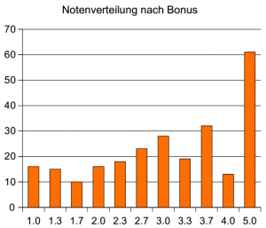

Für die Klausur in den Theoretischen Grundlagen der Informatik sollte man Folgendes auf jeden Fall wissen:
- Wie konstruiert man mittels Potenzmengen einen äquivalenten deterministischen endlichen Automaten zu einem nichtdeterministischen? → Antwort
- Wie bringt man eine Grammatik in Chomsky-Normalform? → Antwort.
- Was macht der CYK-Algorithmus und wie funktioniert er? → siehe Beispiel ab Folie 15
- Was ist die Chomsky-Hierarchie, welche Grammatiken gibt es und mit welchen Operationen sind sie abgeschlossen? → Antwort.
- Was ist das Postsche Korrespondenzproblem?
- Welche Komplexitätsklassen sind $\cal P, NP, NPC, DTAPE, NTAPE, NPI$? → Antwort
- Wie sind Kellerautomaten definiert, wann sind sie formal nicht-deterministisch und in welcher Beziehung stehen sie zur Greibach-Normalform? Wie formt man einen Kellerautomaten von einem akzeptierenden Endzustand in einen mit leerem Stack um? → Antwort.
- Wie lautet das Pumping-Lemma (für reguläre und kontextfreie Sprachen)? Wie lautet Ogdens Lemma? Und wie benutzt man diese für Beweise? → Antwort
- Wie beweist man NP-Vollständigkeit?
Some Random Facts
- "aaa" ist in der Sprache aller Wörter, die zweimal "aa" enthalten. [1]
- Die Grammatik $G_1(\{S\}, \{\varepsilon\}, \{S \rightarrow \varepsilon\},S)$ erzeugt die Sprache $L(G_1) = \{\varepsilon\}$.[2]
- Die Grammatik $G_2(\{S\}, \{\varepsilon\}, \{\},S)$ erzeugt die Sprache $L(G_2) = \{\}$.
- $L_1 := \{aba, bab, ab\}, L_2 := \{bb,ab,ba\}$. Dann ist $L_1 / L_2 = \{\varepsilon, a, b\}$ und $L_1 \setminus L_2 = \{aba, bab\}$[3]
- $PKP \notin \cal NPC$[4]
- Es kann sein, dass die Ableitung eines Wortes nicht eindeutig ist, aber der Syntaxbaum eindeutig ist.
- Für jedes Wort $w$ gibt es einen DEA, der $w$ akzeptiert.[5]
- $L' \propto L$ bedeutet, dass $L'$ polynomial auf $L$ transformierbar ist.
- $L' \propto_T L$ bedeutet, dass $L'$ Turing-reduzierbar auf $L$ ist.
Termin
Datum: Mittwoch, der 22.02.2012 um 14:00 Uhr (siehe Vorlesungswebsite)
Ort: Steht hier. Ich schreibe im Tulla, manche noch im Gaede und andere im HS a. F., Daimler oder Benz. Laut dieser Liste schreiben 295 Personen diese Klausur!
Dauer: 120 min. (siehe erste Folie)
Punkte: Bisher waren es meist ca. 60, von denen man 20 zum Bestehen benötigt hat.
Übungsschein: Liste der 195 Leute, die ihn bestanden haben. Der Übungsschein bringt einen Klausurbonus. Allerdings habe ich keine Ahnung, wie hoch dieser ist.
edit: Die Klausurnote verbessert sich um 0,3 (Danke Alexander ☺)
Klausurergebnisse
Die Klausurergebnisse sind nun öffentlich. Die Liste scheint nach Matrikelnummer sortiert zu sein ... tolle Anonymisierung, da wir ja auch im Saal nach Matrikelnummern sortiert waren. Und falls irgendjemand es vergessen hat: Hier ist die öffentliche Liste der Matrikelnummern. Tja, so werden wir verschaukelt, was den Datenschutz angeht.
edit: Das Leck scheint ausgebessert worden zu sein. Nun sind die Noten nach Klausur-ID sortiert. Sehr schön ☺

